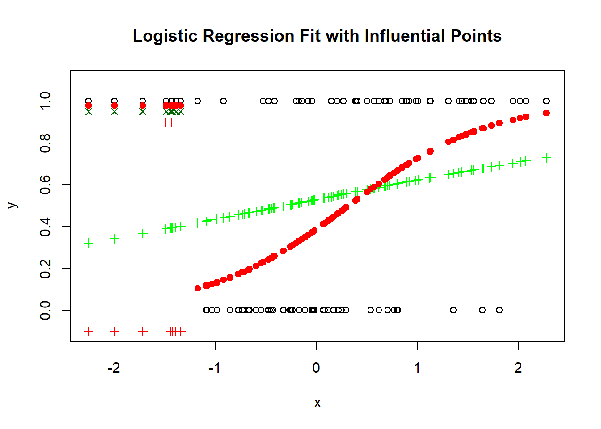

Call:
lm(formula = y ~ y1)
Residuals:
Min 1Q Median 3Q Max
-0.35758 -0.08840 0.00361 0.08666 0.29338
Coefficients:
Estimate Std. Error t value Pr(>|t|)
(Intercept) -0.0112427 0.0249022 -0.451 0.653
y1 1.1111995 0.0001587 7003.071 <2e-16 ***
---
Signif. codes: 0 '***' 0.001 '**' 0.01 '*' 0.05 '.' 0.1 ' ' 1
Residual standard error: 0.1225 on 98 degrees of freedom
Multiple R-squared: 1, Adjusted R-squared: 1
F-statistic: 4.904e+07 on 1 and 98 DF, p-value: < 2.2e-16
summary(lm(y~x))
Call:
lm(formula = y ~ x)
Residuals:
Min 1Q Median 3Q Max
-12.1439 -3.1839 -0.5689 3.1070 17.5196
Coefficients:
Estimate Std. Error t value Pr(>|t|)
(Intercept) 2.01576 1.05379 1.913 0.0587 .
x 2.96645 0.01812 163.744 <2e-16 ***
---
Signif. codes: 0 '***' 0.001 '**' 0.01 '*' 0.05 '.' 0.1 ' ' 1
Residual standard error: 5.229 on 98 degrees of freedom
Multiple R-squared: 0.9964, Adjusted R-squared: 0.9963
F-statistic: 2.681e+04 on 1 and 98 DF, p-value: < 2.2e-16
ypred <-predict(lm(y~x))summary(lm(y~ypred))
Call:
lm(formula = y ~ ypred)
Residuals:
Min 1Q Median 3Q Max
-12.1439 -3.1839 -0.5689 3.1070 17.5196
Coefficients:
Estimate Std. Error t value Pr(>|t|)
(Intercept) 0.000000 1.064498 0.0 1
ypred 1.000000 0.006107 163.7 <2e-16 ***
---
Signif. codes: 0 '***' 0.001 '**' 0.01 '*' 0.05 '.' 0.1 ' ' 1
Residual standard error: 5.229 on 98 degrees of freedom
Multiple R-squared: 0.9964, Adjusted R-squared: 0.9963
F-statistic: 2.681e+04 on 1 and 98 DF, p-value: < 2.2e-16
Try with some examples
From the pscl package:
llh: The log-likelihood from the fitted model
llhNull: The log-likelihood from the intercept-only restricted model
G2: Minus two times the difference in the log-likelihoods
McFadden: McFadden’s pseudo r-squared
r2ML: Maximum likelihood pseudo r-squared
r2CU: Cragg and Uhler’s pseudo r-squared
Example with random data
# Load necessary librarieslibrary(MASS)## install.packages("pscl")library(pscl) # For the pseudo R-squared function
Warning: package 'pscl' was built under R version 4.4.2
Classes and Methods for R originally developed in the
Political Science Computational Laboratory
Department of Political Science
Stanford University (2002-2015),
by and under the direction of Simon Jackman.
hurdle and zeroinfl functions by Achim Zeileis.
# Simulate some dataset.seed(123)n <-100x <-rnorm(n)y <-rbinom(n, 1, prob =0.5) # Random binary outcome that is not related to x# Fit a logistic regression modelmodel <-glm(y ~ x, family = binomial)# Calculate pseudo R-squaredpseudo_r2 <-pR2(model)
Call:
lm(formula = y ~ predict(model))
Residuals:
Min 1Q Median 3Q Max
-0.5428 -0.4866 -0.3965 0.5260 0.5735
Coefficients:
Estimate Std. Error t value Pr(>|t|)
(Intercept) 0.49998 0.05637 8.870 3.42e-14 ***
predict(model) 0.24817 0.31575 0.786 0.434
---
Signif. codes: 0 '***' 0.001 '**' 0.01 '*' 0.05 '.' 0.1 ' ' 1
Residual standard error: 0.5031 on 98 degrees of freedom
Multiple R-squared: 0.006264, Adjusted R-squared: -0.003876
F-statistic: 0.6177 on 1 and 98 DF, p-value: 0.4338
# Check the model summarysummary(model)
Call:
glm(formula = y ~ x, family = binomial)
Coefficients:
Estimate Std. Error z value Pr(>|z|)
(Intercept) -0.09639 0.20191 -0.477 0.633
x 0.17543 0.22231 0.789 0.430
(Dispersion parameter for binomial family taken to be 1)
Null deviance: 138.47 on 99 degrees of freedom
Residual deviance: 137.84 on 98 degrees of freedom
AIC: 141.84
Number of Fisher Scoring iterations: 3
# Visualize the fitplot(x, y, main ="Logistic Regression Fit", xlab ="x", ylab ="y")points(x, fitted(model), col ="red", pch =19)

Example where R2 works
# Simulate data with outliers# Load necessary librarieslibrary(MASS)library(pscl) # For the pseudo R-squared function# Simulate some dataset.seed(456)n <-100x <-rnorm(n)x0 <- x# Create a binary outcome based on a logistic functiony <-rbinom(n, 1, prob =plogis(x))y0 <- y# Introduce influential points by adding extreme values to the predictorr1 <-order(x)ind <- r1[91:100]ind <- r1[1:10]x[ind] <-rep(3, 10) # Make these points influential by shifting x# Recalculate the binary response based on the new x valuesy[ind] <-rbinom(10, 1, prob =plogis(x[ind])) # Ensure y is binary# Fit a logistic regression modelmodel_with_influential_points <-glm(y ~ x0, family = binomial)summary(lm(y~predict(model_with_influential_points)))
Call:
lm(formula = y ~ predict(model_with_influential_points))
Residuals:
Min 1Q Median 3Q Max
-0.6966 -0.5061 0.3009 0.4337 0.6795
Coefficients:
Estimate Std. Error t value Pr(>|t|)
(Intercept) 0.49994 0.05396 9.265 4.77e-15 ***
predict(model_with_influential_points) 0.24128 0.12965 1.861 0.0657 .
---
Signif. codes: 0 '***' 0.001 '**' 0.01 '*' 0.05 '.' 0.1 ' ' 1
Residual standard error: 0.4948 on 98 degrees of freedom
Multiple R-squared: 0.03413, Adjusted R-squared: 0.02428
F-statistic: 3.463 on 1 and 98 DF, p-value: 0.06574
model_without_influential_points <-glm(y ~ x, family = binomial)summary(lm(y0~predict(model_without_influential_points)))
Call:
lm(formula = y0 ~ predict(model_without_influential_points))
Residuals:
Min 1Q Median 3Q Max
-0.6667 -0.4104 -0.3316 0.5131 0.6904
Coefficients:
Estimate Std. Error t value Pr(>|t|)
(Intercept) 0.43755 0.05067 8.635 1.1e-13
predict(model_without_influential_points) 0.05975 0.03029 1.973 0.0513
(Intercept) ***
predict(model_without_influential_points) .
---
Signif. codes: 0 '***' 0.001 '**' 0.01 '*' 0.05 '.' 0.1 ' ' 1
Residual standard error: 0.4937 on 98 degrees of freedom
Multiple R-squared: 0.03819, Adjusted R-squared: 0.02838
F-statistic: 3.892 on 1 and 98 DF, p-value: 0.05135
# Check the model summarysummary(model_with_influential_points)
Call:
glm(formula = y ~ x0, family = binomial)
Coefficients:
Estimate Std. Error z value Pr(>|z|)
(Intercept) 0.1199 0.2051 0.585 0.5588
x0 0.3830 0.2103 1.821 0.0686 .
---
Signif. codes: 0 '***' 0.001 '**' 0.01 '*' 0.05 '.' 0.1 ' ' 1
(Dispersion parameter for binomial family taken to be 1)
Null deviance: 137.99 on 99 degrees of freedom
Residual deviance: 134.53 on 98 degrees of freedom
AIC: 138.53
Number of Fisher Scoring iterations: 4
# Predict probabilitiespredicted_probabilities <-predict(model_with_influential_points, type ="response")# Classify predictions (using 0.5 as the cutoff)predicted_classes <-ifelse(predicted_probabilities >0.5, 1, 0)# Calculate classification errorclassification_error <-mean(predicted_classes != y)print(paste("Classification Error:", round(classification_error, 4)))
[1] "Classification Error: 0.42"
# Predict probabilitiespredicted_probabilities <-predict(model_without_influential_points, type ="response")# Classify predictions (using 0.5 as the cutoff)predicted_classes <-ifelse(predicted_probabilities >0.5, 1, 0)# Calculate classification errorclassification_error <-mean(predicted_classes != y0)print(paste("Classification Error:", round(classification_error, 4)))
[1] "Classification Error: 0.3"
# Visualize the fitplot(x0, y, main ="Logistic Regression Fit with Influential Points", xlab ="x", ylab ="y", ylim =c(-0.1, 1.1))points(x0, fitted(model_with_influential_points), col ="green", pch =3)points(x0[ind], y0[ind]-0.1, col ="red", pch =3)points(x0[ind], y[ind]-0.05, col ="darkgreen", pch =4)points(x0, fitted(model_without_influential_points), col ="red", pch =19)
A case where R^2 can be 0 to 1 depending on the data.
depending on x is between (-3,3), (-3,6), (-1,3)!
# Create data that does not fit a logistic model wellset.seed(789)n <-100x <-seq(-3, 6, length.out = n)y <-ifelse(x^2>1, 1, 0) # Nonlinear relationshipy1 <-ifelse(x >0, 1, 0) # Perfect fit# Fit a logistic regression modelmodel_nonlinear <-glm(y ~ x, family = binomial)# Calculate pseudo R-squaredpseudo_r2_nonlinear <-pR2(model_nonlinear)
xa <-rep(1,length(y))summary(lm(y~predict(model_nonlinear)))
Call:
lm(formula = y ~ predict(model_nonlinear))
Residuals:
Min 1Q Median 3Q Max
-0.74495 0.01252 0.12525 0.23797 0.45545
Coefficients:
Estimate Std. Error t value Pr(>|t|)
(Intercept) 0.54857 0.07910 6.935 4.38e-10 ***
predict(model_nonlinear) 0.16011 0.04918 3.256 0.00155 **
---
Signif. codes: 0 '***' 0.001 '**' 0.01 '*' 0.05 '.' 0.1 ' ' 1
Residual standard error: 0.4038 on 98 degrees of freedom
Multiple R-squared: 0.0976, Adjusted R-squared: 0.08839
F-statistic: 10.6 on 1 and 98 DF, p-value: 0.001554
# Check the model summarysummary(model_nonlinear)
Call:
glm(formula = y ~ x, family = binomial)
Coefficients:
Estimate Std. Error z value Pr(>|z|)
(Intercept) 0.9136 0.2547 3.588 0.000334 ***
x 0.3129 0.1054 2.969 0.002991 **
---
Signif. codes: 0 '***' 0.001 '**' 0.01 '*' 0.05 '.' 0.1 ' ' 1
(Dispersion parameter for binomial family taken to be 1)
Null deviance: 107.855 on 99 degrees of freedom
Residual deviance: 97.605 on 98 degrees of freedom
AIC: 101.61
Number of Fisher Scoring iterations: 4
# Visualize the fitplot(x, y, main ="Logistic Regression Fit for Nonlinear Data", xlab ="x", ylab ="y")points(x, fitted(model_nonlinear), col ="red", pch =19)
\(R^2\) can only increase when adding more variables
An error in reporting R2.
The null mean model is different in those two types of model specifications, even though they are the same model.
Note
r.squared: R^2, the ‘fraction of variance explained by the model’, R^2 = 1 - Sum(R[i]^2) / Sum((y[i]- y)^2), where y is the mean of y[i] if there is an intercept and zero otherwise.
library("sigr")
Warning: package 'sigr' was built under R version 4.4.2